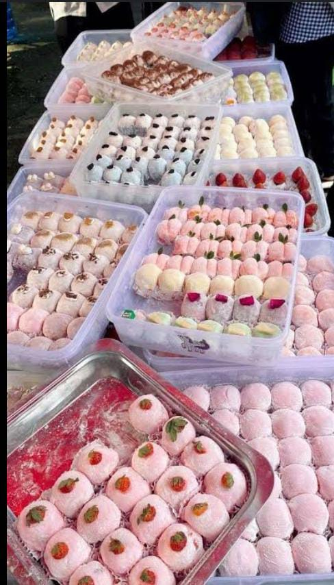

Perdagangan mochi di Indonesia melibatkan produksi dan penjualan mochi tradisional hingga inovasi mochi modern dengan berbagai rasa dan isian, seperti cokelat, buah, dan red bean. Usaha mochi berfokus pada strategi pemasaran yang inovatif, termasuk promosi di media sosial seperti TikTok dan Instagram, serta penjualan di lokasi strategis seperti pusat perbelanjaan dan toko kelontong kecil. Mochi, meskipun berasal dari luar negeri, telah menjadi tren kuliner populer di Indonesia dan memiliki potensi besar untuk terus tumbuh dan berkembang.
Perkembangan Produk
Mochi Tradisional:
Mochi dengan isian kacang tanah manis, seperti yang diproduksi di Sukabumi, merupakan salah satu bentuk mochi tradisional yang masih populer.
Mochi Inovatif:
Bisnis mochi terus berinovasi dengan menghadirkan varian rasa baru dan isian unik seperti stroberi, cokelat, matcha, dan lainnya.
Varian Mochi:
Selain mochi isi, ada juga mochi dengan konsep baru seperti Mochi Bites yang dicelupkan ke dalam krim, dan mochi cake.
Saluran Penjualan
Penjualan Langsung:
Mochi dijual di gerai kecil, toko kontainer booth, hingga meja biasa di pinggir jalan, seperti yang dijelaskan oleh detikFinance.
Perdagangan Online:
Platform digital seperti WhatsApp, Instagram, dan platform e-commerce seperti Blibli juga dimanfaatkan untuk promosi dan penjualan mochi.
Lokasi Strategis:
Penjualan mochi dilakukan di lokasi yang ramai seperti kawasan sekolah, kampus, pusat perbelanjaan, area pabrik, dan tempat wisata.
Strategi Pemasaran
Media Sosial:
Promosi mochi melalui konten video di TikTok dan postingan di Instagram sangat efektif untuk menjangkau konsumen dan meningkatkan penjualan.
Inovasi Rasa:
Inovasi dalam perpaduan rasa dan isian yang menarik membuat mochi lebih disukai oleh berbagai kalangan, terutama anak muda.
Penetapan Harga Terjangkau:
Mochi dengan harga yang terjangkau, seperti Rp 1.000 hingga Rp 5.000 per buah, membuat produk ini lebih mudah diakses oleh berbagai kalangan masyarakat.
Kemasan Menarik:
Kemasan produk yang bagus dan menarik juga menjadi faktor penting untuk menarik minat pembeli dan meningkatkan nilai jual produk.